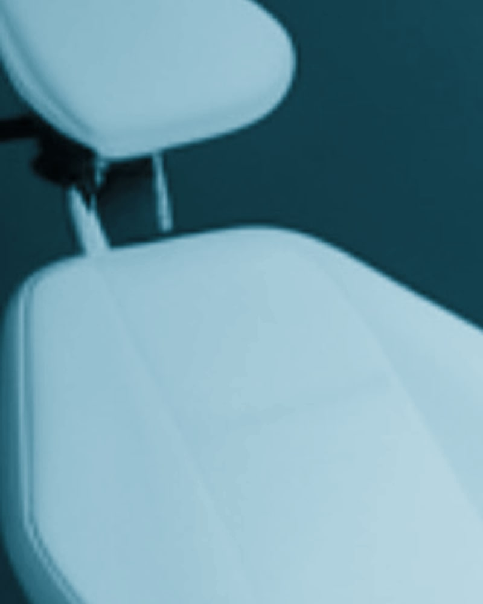
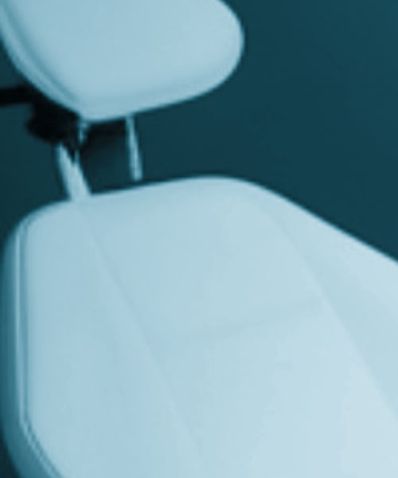
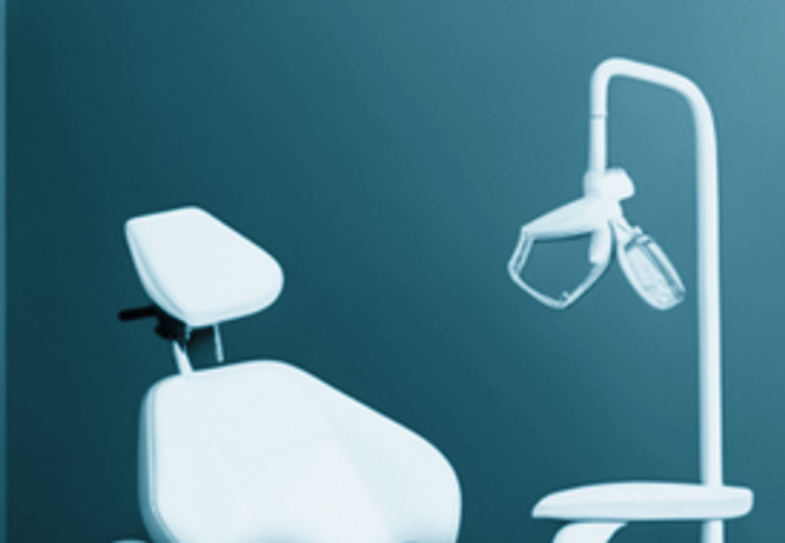
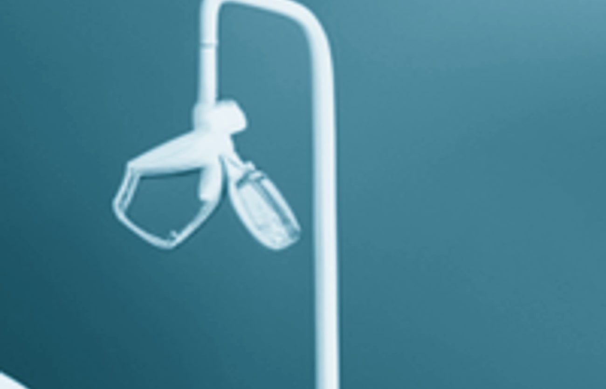
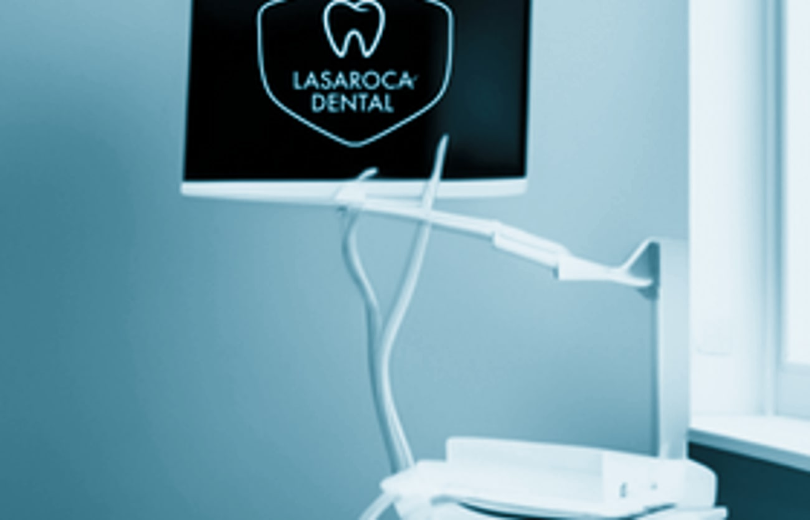

Odontología general
Prevención, revisiones, empastes y limpieza profesional. La base de una boca sana mantenida en el tiempo.
Ver tratamientoOdontología general, cirugía oral y estética dental en El Campello. Una clínica familiar que mantiene el criterio clínico y el trato cercano desde 1991.
Desde la higiene rutinaria hasta la cirugía con implantes, cada tratamiento se planifica con la misma atención al detalle. Sin paquetes cerrados, sin prisas.
Prevención, revisiones, empastes y limpieza profesional. La base de una boca sana mantenida en el tiempo.
Ver tratamientoExtracciones e implantes dentales planificados con estudio previo. Intervenciones controladas y recuperación acompañada.
Ver tratamientoBlanqueamiento profesional y carillas realizadas con criterio natural. Sin forzar resultados que no sean los tuyos.
Ver tratamientoBrackets tradicionales y ortodoncia invisible para adultos y adolescentes. Estudio y seguimiento personalizado.
Ver tratamientoTratamiento de encías, curetajes y mantenimiento periodontal. Intervenimos antes de que la encía pierda soporte.
Ver tratamientoTratamientos de conducto con anestesia cuidadosa. Salvamos la pieza siempre que la evidencia clínica lo permita.
Ver tratamientoLa continuidad de criterio es una forma de calidad. Los pacientes de Lasaroca saben quién les atiende y por qué se toma cada decisión.
Dirige Lasaroca Dental desde la apertura de la clínica en El Campello. Su formación combina odontología general con actualización constante en cirugía oral, estética y rehabilitación.
Su filosofa clínica es sencilla: explicar antes de tratar, no tratar de más, y respetar el ritmo de cada paciente. Una consulta donde se pregunta antes de decidir.
Atiende en español, inglés y francés a pacientes residentes y de paso en la Costa Blanca. La mayoría llegan por recomendación, y vuelven año tras año a la misma silla.
No promete sonrisas nuevas ni vidas transformadas. Promete trabajo clínico hecho con la misma mano desde 1991.
La misma clínica, la misma directora, el mismo criterio desde 1991. Los pacientes vuelven porque no cambia lo que funciona.
Un solo estándar de calidad mantenido en el tiempo. Sin rotación de profesionales ni protocolos comerciales.
Revisión, diagnóstico y presupuesto antes de decidir nada. La consulta inicial siempre es gratuita y sin compromiso.
C/ Doctor Fleming 41, en pleno centro de El Campello. Fácil acceso, bien comunicado y con parking cercano.
Una hora dedicada a entender tu situación antes de proponer nada. Si no hace falta tratamiento, te lo decimos.

Dos gabinetes clínicos equipados con tecnología actualizada, recepción con sala de espera tranquila y esterilización con protocolo propio.




Si tu duda no está aquí, llama directamente. Carolina atiende el teléfono personalmente cuando la agenda lo permite.